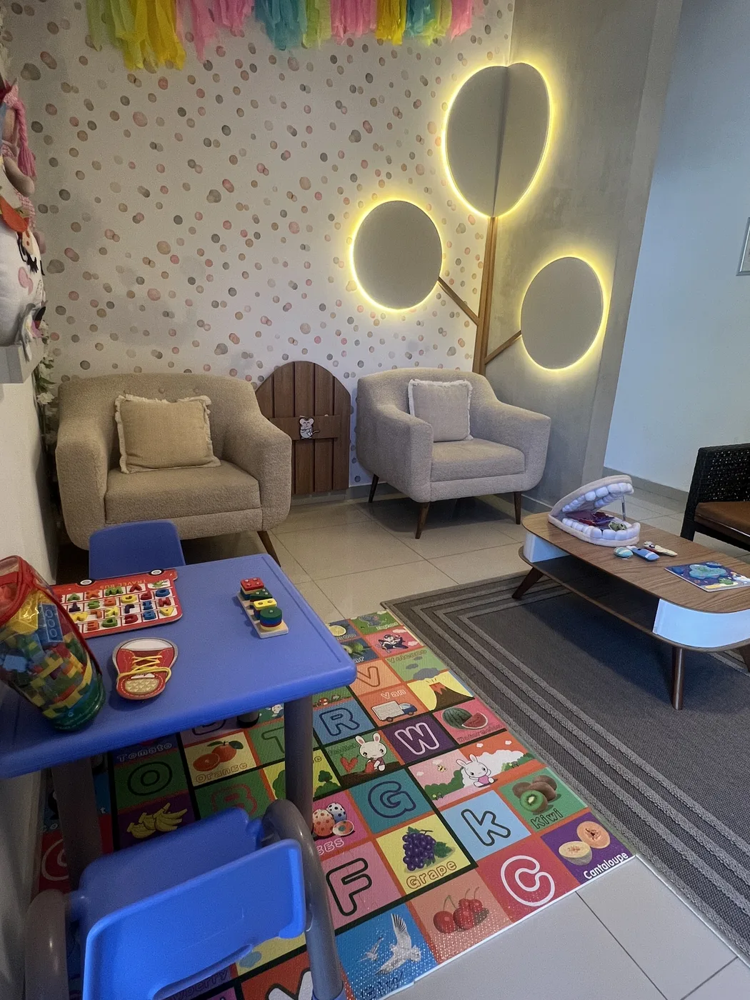

Traé su cepillo y pasta dental
Así podemos revisar cómo se realiza la higiene diaria y orientar mejor.
Primera consulta
La primera visita nos ayuda a conocer su sonrisa, resolver dudas y armar un plan de cuidado sin juicios, con calma y a su ritmo.
Completar formulario previo
Qué tener en cuenta
Así podemos revisar cómo se realiza la higiene diaria y orientar mejor.
La primera consulta necesita tiempo para conversar, observar y responder dudas sin apuro.
Traé una lista de dudas sobre salud bucal, hábitos, alimentación o cepillado.
La puntualidad ayuda a mantener una atención organizada y tranquila para todos.
Recordatorio
Aunque no exista dolor, una consulta permite detectar riesgos, reforzar hábitos y acompañar la salud bucal con un plan claro para casa.